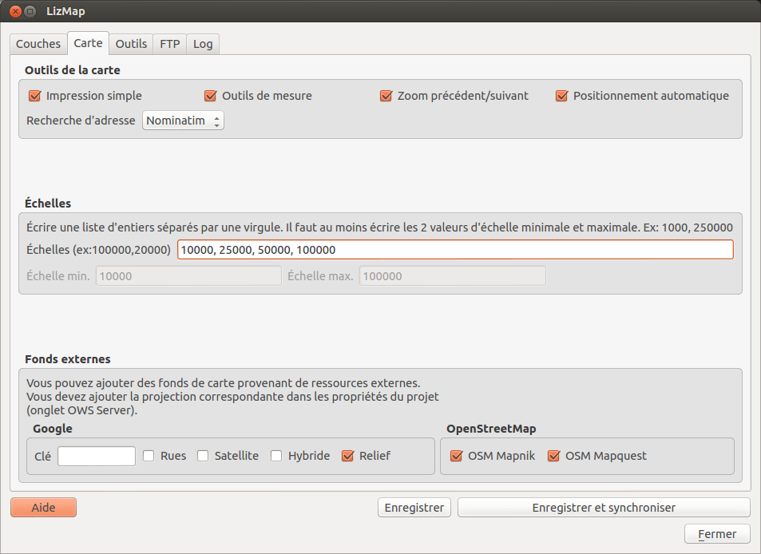

Cet onglet vous permet d’activer ou désactiver des outils, de choisir les échelles et les fonds externes.
Pour proposer l’impression sur la carte en ligne, il faut que le projet QGIS ait au moins un composeur d’impression.
Si cette case est cochée, Lizmap Web Client utilisera le premier composeur d’impression trouvé dans la liste des composeurs du projet QGIS.
Lorsque l’impression simple est activée, et que l’utilisateur clique sur l’outil dans Lizmap Web Client, un rectangle est dessiné sur la carte en ligne. Ce rectangle représente le premier cadre de carte du composeur d’impression. Les proportions sont équivalentes, ce qui permet d’assurer que la zone imprimée dans le pdf correspond exactement à ce que l’utilisateur choisit.
L’utilisateur peut déplacer ce rectangle puis cliquer sur le bouton imprimer.
Lorsque cette option est activée, l’utilisateur de la carte en ligne voit le menu Mesure apparaître dans l’interface.
Lorsqu’il clique sur ce menu, une liste déroulante propose de mesurer
Pour réaliser la mesure, l’utilisateur clique sur la carte les points successifs de mesure. Un message affiche le résultat de la mesure au fil de l’ajout de points. Un double clic sur la carte permet de finaliser la mesure.
Cette option permet d’ajouter 2 boutons sous la barre de navigation (celle qui contient les boutons de zoom et la barre de sélection de l’échelle).
Tout déplacement sur la carte est enregistré : glisser-déplacer, zoom avant, zoom arrière. Ces 2 boutons permettent à l’utilisateur de revenir d’un ou plusieurs emprises en arrière ou en avant.
Cette option ajoute dans l’interface un menu Géolocalisation .
Lorsque l’utilisateur active cet outil, une demande de positionnement est faite via le navigateur. En fonction de l’appareil utilisé et de la connexion internet, le navigateur peut:
La carte est automatiquement re-centrée sur la localisation récupérée par le navigateur.
Cet outil peut donc être intéressant si on souhaite consulter la carte Lizmap en ligne depuis son matériel mobile (smartphone, tablette durcie, etc.). Il faut une connection internet active et activer le GPS de l’appareil.
Il est possible de choisir un moteur externe de recherche d’adresses ou de lieux. Les moteurs disponibles sont les suivants:
Nominatim
C’est le moteur officiel du projet OpenStreetMap (http://osm.org et http://nominatim.openstreetmap.org/ ). Il permet de faire des recherches d’adresse, du type “Rue Foch, Montpellier” ou de points d’intérêts, du type “Tour eiffel” ou encore “Au panier gourmand, montpellier”.
Important: La recherche d’adresse est limitée à l’emprise du projet QGIs spécifiée dans l’onglet “Serveur OWS” des propriétés du projet QGIS.
Lizmap vous permet de choisir les échelles d’affichage que vous souhaitez utiliser dans l’application Web. Vous pouvez donc renseigner une liste d’échelles via cette option.
Pour configurer les échelles, il suffit d’écrire une liste d’échelles entières séparées par une virgule (et optionnellement un espace), par exemple: 250000, 100000, 50000.
Lizmap utilise aussi ces échelles pour restreindre l’affichage entre les échelles minimum et maximum données. C’est pourquoi il est obligatoire de renseigner au moins 2 échelles dans la liste
Les 2 échelles minimum et maximum sont automatiquement extraites et affichées pour rappel dans les champs situés sous le champ texte.
Lizmap permet d’ajouter des fonds externes à la liste des fonds de carte
L’ajout d’un ou de plusieurs fond(s) externe(s) à votre carte Lizmap a plusieurs conséquences, qu’il faut bien connaître pour anticiper le rendu :
c’est ce fond externe qui imposera les échelles de la carte. Les échelles configurées ci-dessus ne seront donc pas utilisées, sauf les échelles min et max pour restreindre la carte entre ces 2 échelles.
Il faut donc faire attention dans le projet QGIS à adapter les seuils de visibilités des couches en fonction des échelles du fond externe. Voici les échelles entières approximatives des fonds externes courants:
0 591659008
1 295829504
2 147914752
3 73957376
4 36978688
5 18489344
6 9244672
7 4622336
8 2311168
9 1155584
10 577792
11 288896
12 144448
13 72224
14 36112
15 18056
16 9028
17 4514
18 2257
L’affichage des données du projet QGIS se faisant sur un fond externe, QGIS doit donc reprojeter à la volée les données dans le système spatial de référence du fond Il faut donc ajouter cette projection dans l’onglet OWS des propriétés du projet. Pour l’instant, l’ensemble des fonds proposés utilise la projection:
EPSG:3857 ; Pseudo Mercator
Les fonds externes ne peuvent pas être imprimés par QGIS
En effet, ils ne sont pas dans le projet QGIS, et sont ajoutés dynamiquement par Lizmap Web Client.
Respecter la licence des données et les conditions d’utilisation